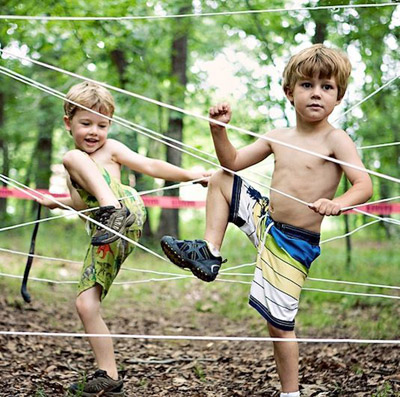

返回主页
偷天陷阱

几根绳子交错一下，孩子们玩上一天都不会厌烦。
流体力学
精选资料汇总
Wer spielen kann, lernt besser!
莫比乌斯环
古之学者为己，今之学者为人。我们用心做，您来细细品。您也可以 先下载一个应用程序（App），有空再慢慢看。
The academic Curriculum.（Winchester College, Eton College & Harrow School）
Art. Astronomy. Biology. Business Studies. Chemistry. Classics. Critical Thinking. Design Technology. Economics. English. Etiquette. Geography. Government & Politics. History. History of Art. Information Technology. Mathematics. Modern Languages. Music. Music Technology. Philosophy. Physical Education. Physics. Religious Studies, Divinity, Theology. Sports, Games. Statistics. Theatre Studies (Drama). Speech & Drama（语言和戏剧）
Promoting the best habits of independent thought and learning in the pursuit of excellence;
Providing a broadly-based education designed to enable all boys to discover their strengths, and to make the most of their talents within Eton and beyond;
Engendering respect for individuality, difference, the importance of teamwork and the contribution that each boy makes to the life of the school and the community;
Supporting pastoral care that nurtures physical health, emotional maturity and spiritual richness;
Fostering self-confidence, enthusiasm, perseverance, tolerance and integrity.
打架博弈
贵族本质上是一个军事集团。其教育注重培养人格品性、发展领袖才能、文质彬彬尤重体育（Sports）。在实践中，逐步形成以博雅（liberal arts）为核心的教育体系。优雅（Elegant）
中国人越来越不喜欢足球了？
The Ivy League is an athletic conference. Liberal arts are trivium―the verbal arts: logic, grammar, and rhetoric; and quadrivium―the numerical arts: mathematics, geometry, music, and astronomy. Analyzing and interpreting information is also studied. Experience in the liberal arts aids in the formation and expression of well-rounded opinions, via critical thinking.
Great Books, History, Languages (SLA), Linguistics, Literature, Mathematics, Music, Philosophy, Political Science, Psychology, Religious studies, Science, Theater
六艺：礼、乐、射、御、书、数
version:1.0; jobnet@188.com © retter2012.com